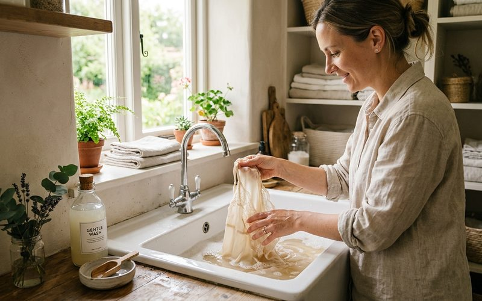

Tecidos delicados têm uma reputação de difíceis que não é inteiramente justa. Sim, seda, lã, linho e veludo pedem mais atenção do que o algodão convencional, mas com algumas técnicas simples e um pouco de paciência, você pode lavá-los e conservá-los em casa com excelentes resultados. Saber cuidar de peças delicadas é uma habilidade que multiplica o valor do seu guarda-roupa, especialmente quando se trata de achados de brechó que você quer preservar por muito tempo.
A seda é um tecido proteico, suas fibras, como cabelos, reagem mal ao calor e a produtos alcalinos. Para lavar à mão, use água fria ou morna (nunca quente) e sabão neutro ou shampoo suave. Mergulhe a peça sem esfregar, deixe repousar por no máximo cinco minutos, e enxágue em água igualmente fria. Para retirar o excesso de água, enrole a peça numa toalha limpa e pressione levemente, nunca torça. Seque à sombra, estendida na horizontal.
Nunca use alvejante em seda, ela destrói as fibras. Manchas pontuais podem ser tratadas com umedecimento local com água fria e toque suave. Para manchas persistentes, leve a uma lavanderia especializada em tecidos delicados antes de tentar qualquer intervenção mais agressiva.
A lã feltrifica, ou seja, suas fibras se entrelaçam irreversivelmente, quando exposta a calor e fricção ao mesmo tempo. Por isso, a lavagem à mão de peças de lã exige água fria, movimentos suaves (sem esfregar) e enxágue cuidadoso. Amaciante pode ser usado para lã: ele suaviza as fibras e facilita o manuseio. Para secar, modele a peça na forma desejada enquanto ainda úmida e seque plana, sobre uma toalha, nunca pendurada.
Peças de lã mais delicadas, cashmere, angora, lã merino fina, merecem o mesmo tratamento da seda. Cashmere em particular é um dos tecidos mais recompensadores do garimpo: uma peça de cashmere encontrada em brechó e bem cuidada pode durar décadas com a maciez intacta.
O linho é o mais robusto dos tecidos delicados. Ele tolera temperatura levemente mais alta (morno, não quente) e pode ir na máquina em ciclo delicado, virado ao avesso para proteger a cor. O truque do linho é secá-lo levemente úmido e então passar ferro a vapor enquanto ainda tem alguma umidade, é assim que você tira as marcas de vinco com facilidade. Seco completamente antes de passar, o linho resiste ao ferro e você precisa de muita força e vapor para desamassá-lo.
Veludo não se passa com ferro diretamente, isso esmaga o pelo e cria marcas brilhantes permanentes. O aliado do veludo é o vapor: use um vaporizador de roupas ou pendure a peça no banheiro durante um banho quente, deixando o vapor amaciar naturalmente as fibras. Para armazenar peças de veludo, evite dobrar, o ideal é deixá-las penduradas com espaço suficiente para que o pelo não fique pressionado contra outras superfícies.
Cuidar de tecidos delicados é uma prática que se aprende e se incorpora naturalmente à rotina. Uma vez que você entende a lógica de cada material, o que o fragiliza e o que o preserva, o cuidado deixa de ser uma obrigação e passa a ser um ritual de valorização das peças que você escolheu com cuidado. E no brechó, onde cada peça foi escolhida com intenção, esse cuidado faz ainda mais sentido.